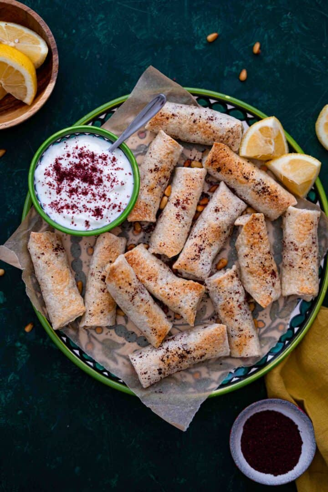

MUSAKHAN ROLLS

WHAT IS MUSAKHAN?
The term "Musakhan" translates to 'heated' in Arabic, a name that catches the essence of this warm, comforting
dish.
Musakhan is a traditional recipe that is considered the national dish of Palestine, it consists of lots of
caramelized onions cooked in extra virgin olive oil and lots of sumac spice, spread on traditional taboon bread,
(taboon bread is a flat bread made of white and wheat flour baked in a clay oven) and topped with roasted
chicken then with some toasted crunchy pine nuts and almonds.
INGREDIENTS
- Chicken Breast
- Red Onions
- Sumac Spice
- Extra Virgin Olive Oil
- Flat Thin Bread
- Toasted Pine Nuts
- Lemon Juice
INSTRUCTIONS
COOKING ONIONS
- Chop onions finely.
- In a pot heat olive oil over medium-high heat, then add chopped onions. Cook until onions are soft and
caramelized, about 10-15 minutes. Then season with salt, black pepper, and sumac.
COOKING CHICKEN
- Slice chicken into small pieces, add salt, lemon juice, and spices and mix well.
- In a large skillet heat oil over high-medium heat, and cook chicken.
- Pour cooked chicken over the onion mixture and integrate everything well together. Adjust taste by adding
salt and extra sumac if needed. Add toasted pine nuts.
ASSEMBLING MUSAKHAN ROLLS
- With a knife or a pizza cutter cut each tortilla into four triangle pieces.
- Place one tablespoon of musakhan stuffing on the top of each triangle, tuck in the sides then roll over the
filling to create a roll. Place the rolls seam side on a baking tray, and continue the process until all
filling is done.
FOR BAKING
- Brush the tops of the rolls with some olive oil and sprinkle with sumac, then bake on a preheated 400 oven
for 15-20 minutes or until they’re golden brown and crispy.